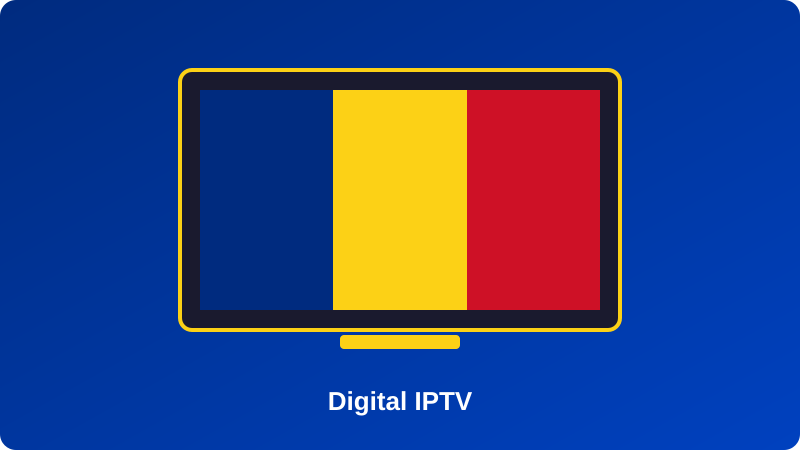
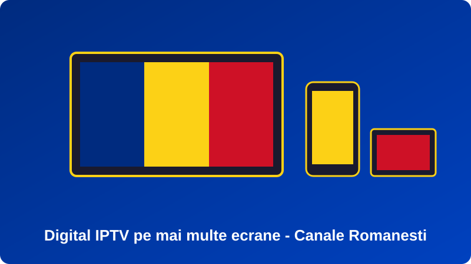

Daca ai cautat digital iptv, probabil vrei un lucru simplu: sa vezi canalele romanesti preferate, fara cabluri, fara tehnicieni si fara contracte care te leaga ani la rand. Stirile de seara, filmul de weekend sau meciul cu prietenii ar trebui sa porneasca imediat, pe orice ecran din casa.
Realitatea este ca termenul digital iptv apare in multe contexte. Unii se gandesc la televiziunea digitala clasica, altii la servicii de televiziune prin internet. Pentru romanii plecati la munca diferenta este mare: cablul unui operator local nu merge in alta tara, in timp ce un abonament IPTV merge oriunde ai conexiune la net.
In acest ghid explicam ce inseamna digital iptv, cum functioneaza, ce canale poti primi, cum il compari cu cablul si cum eviti listele gratuite nesigure. Echipa Romania IPTV lucreaza zilnic cu familii din Romania si din diaspora, iar sfaturile vin din situatii reale.

Cuprins
- Ce este digital iptv si de ce il cauta tot mai multi romani
- Cum functioneaza digital iptv, pas cu pas
- Canalele romanesti disponibile prin digital iptv
- Digital iptv versus cablu, satelit si antena
- Cum configurezi digital iptv pe televizor, telefon sau box
- Liste gratuite de digital iptv: ce riscuri exista
- Digital iptv pentru diaspora romaneasca
- Cum alegi un furnizor de digital iptv
- Intrebari frecvente
- Concluzie
Ce este digital iptv si de ce il cauta tot mai multi romani
Expresia digital iptv descrie televiziunea digitala livrata prin internet, nu prin antena, cablu sau satelit. Semnalul ajunge printr-o aplicatie instalata pe televizor, telefon sau box, iar tu alegi canalul dintr-o lista, exact ca la televizorul clasic, doar ca mult mai flexibil.
Digital si IPTV: cele doua jumatati ale termenului
Cuvantul digital arata ca imaginea si sunetul sunt transmise sub forma de date, fara degradarea specifica semnalului analogic. IPTV inseamna Internet Protocol Television, adica televiziune prin protocolul internetului. Impreuna, cele doua formeaza o solutie moderna: calitate buna, mutare usoara de pe un ecran pe altul si acces din orice tara.
Cine foloseste digital iptv
Cei mai multi utilizatori sunt romani plecati la munca in Germania, Italia, Spania, Marea Britanie sau Belgia, care vor sa vada canalele de acasa. La ei se adauga familiile din tara care s-au saturat de abonamente rigide. Pentru toti, digital iptv inseamna libertatea de a pastra televiziunea romaneasca oriunde se muta.
Cum functioneaza digital iptv, pas cu pas
Furnizorul primeste canalele la sursa, le comprima si le transmite prin servere puternice. Aplicatia ta cere fluxul, il decodeaza si afiseaza imaginea in fractiuni de secunda. Tot ce ai nevoie de la tine este o conexiune stabila.
Ce echipament iti trebuie
- un Smart TV, un Android TV box, un Firestick, un telefon, o tableta sau un laptop;
- o aplicatie IPTV compatibila, instalata din magazinul de aplicatii;
- datele de acces primite de la furnizor, de obicei un link sau un cont.
Ce viteza de internet este necesara
Pentru HD sunt suficienti aproximativ 10 Mbps, iar pentru 4K este bine sa ai 25 Mbps disponibili. Daca mai multe persoane folosesc reteaua in acelasi timp, aduna consumul fiecarui ecran. Un serviciu digital iptv cu servere bune iti ofera imagine fluida chiar si seara, in orele de varf.
Wi-Fi sau cablu de retea
Cablul Ethernet ramane varianta cea mai stabila, mai ales pentru televizorul din sufragerie. Daca folosesti Wi-Fi, apropie routerul sau foloseste banda de 5 GHz, pentru a evita blocajele in timpul meciurilor sau al filmelor.
Merita sa tii minte ca experienta depinde mult de modul in care folosesti serviciul. Un aparat modern, o retea curata si o aplicatie actualizata fac diferenta intre o seara placuta si una plina de blocaje. Verifica periodic actualizarile si evita sa rulezi mai multe descarcari grele in acelasi timp cu televizorul.
Un alt aspect important este durata de viata a aparatelor. Un televizor mai vechi poate sa nu accepte aplicatii moderne, dar o solutie ieftina este un mic box Android sau un stick conectat la portul HDMI. Costul este redus, iar rezultatul este un ecran care primeste toate canalele cu imagine curata si meniuri rapide. Multe familii pastreaza televizorul vechi si schimba doar aparatul care ruleaza aplicatia.
Canalele romanesti disponibile prin digital iptv
Un serviciu digital iptv bun pentru publicul roman include canalele pe care le cauta orice familie. Lista exacta difera in functie de furnizor, asa ca merita sa o verifici in perioada de test.
Stiri, filme si divertisment
Canalele de stiri, posturile generaliste, filmele, serialele si emisiunile de divertisment sunt coloana vertebrala a ofertei. Multe servicii adauga si arhiva, astfel incat sa poti revedea o emisiune pierduta.
Sport, copii si muzica
Fanii de fotbal cauta meciurile din campionatul intern si cupele europene, iar copiii au nevoie de desene animate in limba romana. Muzica si canalele tematice completeaza pachetul, iar cu un singur abonament poti acoperi gusturile tuturor din casa.
Calitate HD, FHD si 4K
Rezolutia conteaza mai ales pe ecranele mari. Cauta un furnizor care ofera canale HD si FHD si, unde exista sursa, 4K. Imaginea clara face diferenta la sport si la filmele de seara.
Digital iptv versus cablu, satelit si antena
Compararea este utila ca sa intelegi unde castiga digital iptv si unde mai are limite. Mai jos ai o privire de ansamblu.
| Criteriu | Digital IPTV | Cablu / satelit |
|---|---|---|
| Instalare | Doar aplicatie | Tehnician si echipament |
| Mobilitate | Functioneaza in orice tara | Legat de adresa |
| Contract | De obicei flexibil | Adesea pe 12-24 luni |
| Ecrane | TV, telefon, tableta, laptop | De regula televizor |
Avantajele principale
Flexibilitatea este cel mai mare atu: te muti, iei aplicatia cu tine si canalele te urmeaza. Costurile initiale sunt mici, iar configurarea dureaza cateva minute.
Limitele de care trebuie sa tii cont
Fara internet nu exista imagine, iar o retea slaba duce la blocaje. De aceea ai nevoie de o conexiune decenta si de un furnizor care iti ofera asistenta rapida atunci cand apar probleme.
Daca te intrebi cat dureaza sa te obisnuiesti, raspunsul este: foarte putin. Interfata aplicatiilor seamana cu o lista de canale clasica, cu ghid de programe, cautare si favorite. Dupa prima seara, cei mai multi utilizatori nu mai observa nicio diferenta fata de televizorul cu cablu, cu exceptia faptului ca totul este mai simplu si mai ieftin.
Cum configurezi digital iptv pe televizor, telefon sau box
Configurarea unui serviciu digital iptv este mai simpla decat pare. Nu ai nevoie de cunostinte tehnice, doar de cativa pasi facuti cu atentie.
Pasii de baza
- Alege aparatul si verifica daca accepta aplicatii IPTV.
- Instaleaza aplicatia recomandata de furnizor.
- Introdu datele de acces primite pe WhatsApp.
- Asteapta incarcarea listei de canale si alege primul program.
- Seteaza favoritele pentru a ajunge repede la canalele tale.
Probleme frecvente si solutii rapide
Daca imaginea se blocheaza, reporneste aplicatia si routerul. Daca lipsesc canale, actualizeaza lista din aplicatie. Daca problema persista, scrie echipei de suport si descrie exact ce vezi pe ecran; un mesaj clar rezolva de obicei situatia in cateva minute.
Mai este si partea de confort. Poti opri un film pe televizor si il poti continua pe telefon, poti urmari un meci in drum spre serviciu si poti lasa copiii sa se uite la desene pe tableta, fara sa mai cauti telecomenzi sau receptoare. Pentru familiile care se muta frecvent, aceasta libertate valoreaza mai mult decat orice reducere de pret.
Liste gratuite de digital iptv: ce riscuri exista
Cautarea unui digital iptv gratuit duce adesea spre liste publice, dar acestea au probleme serioase. Linkurile mor in cateva zile, calitatea este slaba, iar unele pagini cer instalari suspecte.
Alternativa sigura: testul gratuit
Un furnizor transparent iti ofera un acces de test limitat in timp. Il poti folosi pentru a verifica lista de canale, stabilitatea si calitatea imaginii inainte sa platesti ceva. Astfel eviti surprizele si ai de la inceput un contact real pentru suport.
Tot astfel, seara, in orele de varf, retelele sunt mai aglomerate, asa ca testul este cel mai relevant atunci. Daca imaginea merge bine la ora 20:00, vei avea rezultate bune si in restul zilei.

Digital iptv pentru diaspora romaneasca
Pentru romanii din afara tarii, digital iptv rezolva o problema veche: dorul de casa. Canalele de stiri iti arata ce se intampla in tara, iar emisiunile si filmele iti aduc sentimentul de acasa. Familiile cu copii apreciaza desenele animate in limba materna, care ajuta la pastrarea limbii.
Functioneaza in orice tara
Atat timp cat ai internet, serviciul merge in Germania, Italia, Spania, Anglia sau Belgia. Daca vrei sa vezi cum arata alte oferte pentru comunitati diferite, poti consulta si greek iptv sau tilaa iptv pentru comparatie.
Mai multe ecrane in aceeasi casa
Multe familii vor televizorul in sufragerie si un telefon sau o tableta in alta camera. Verifica de la inceput cate conexiuni simultane permite abonamentul, ca sa nu apara conflicte seara.
Cum alegi un furnizor de digital iptv
Piata este plina de oferte, iar diferentele reies din detalii. Cand cauti digital iptv, uita-te la cateva criterii simple si verifica-le inainte sa te hotarasti.
Criterii care conteaza
- test gratuit sau perioada de proba clara;
- suport in limba romana, rapid si pe WhatsApp;
- lista de canale actualizata si stabilitate dovedita;
- pret transparent, fara costuri ascunse;
- compatibilitate cu aparatele pe care le ai deja.
Ce oferim noi
La Romania IPTV punem accent pe canale romanesti stabile, configurare ajutata si raspuns rapid. Daca vrei sa vezi mai multe optiuni, citeste si digi iptv, digi tv iptv si digi iptv romania. Pentru o privire de ansamblu, vezi ghidul iptv romania.
In sfarsit, nu uita de securitate. Foloseste parole puternice pentru contul tau, nu da datele de acces altor persoane si instaleaza aplicatiile doar din magazinele oficiale. Un furnizor serios nu iti va cere niciodata parola contului de email sau date bancare prin mesaje neprevazute. Respectand aceste reguli simple, ai o experienta lipsita de griji, cu canale romanesti la un click distanta.
Sfaturi finale inainte sa incepi
Noteaza canalele pe care le urmaresti cel mai des si cere-le explicit in perioada de test. Verifica sunetul, subtitrarile si fluiditatea la sport. Discuta cu familia despre ecranele de care aveti nevoie si alege pachetul potrivit, nu cel mai mare. Astfel platesti doar pentru ceea ce folosesti si ai siguranta ca decizia este una buna pe termen lung.
Intrebari frecvente despre digital iptv
Ce inseamna digital iptv?
Este televiziunea digitala transmisa prin internet, printr-o aplicatie, fara antena, cablu sau satelit. Canalele ajung pe orice ecran conectat la net.
Pot vedea canalele romanesti in strainatate?
Da. Serviciul depinde doar de internet, deci functioneaza in orice tara, inclusiv pentru romanii din diaspora.
Ce viteza de internet am nevoie?
Aproximativ 10 Mbps pentru HD si 25 Mbps pentru 4K. Daca folosesti mai multe ecrane, aduna cerintele fiecaruia.
Cum primesc un test gratuit?
Scrie-ne pe WhatsApp, spune ce aparat folosesti si primesti acces de test, fara card si fara contract.
Pe ce aparate merge digital iptv?
Pe Smart TV, Android TV box, Firestick, telefoane si tablete Android sau iOS, laptopuri si alte aparate care accepta aplicatii IPTV.
Este legal sa folosesc IPTV?
Tehnologia este legala. Important este sa alegi un furnizor transparent si sa eviti listele anonime de pe internet.
Sunt sigure listele gratuite?
Nu intotdeauna. Pot avea linkuri moarte, reclame agresive sau cer instalari dubioase. Testul gratuit al unui furnizor este mai sigur.
Ce fac daca un canal nu porneste?
Reporneste aplicatia si routerul, verifica internetul, apoi scrie-ne pe WhatsApp pentru ajutor in limba romana.
Testeaza gratuit canalele romanesti
Scrie-ne pe WhatsApp si primesti acces de test, fara card si fara contract.
Cere testul pe WhatsAppConcluzie
Pe scurt, digital iptv inseamna televiziune romaneasca prin internet, pe toate ecranele din casa. Pentru diaspora este solutia cea mai flexibila, iar pentru cei din tara este o alternativa la cablul clasic. Evita listele gratuite instabile, testeaza serviciul seara si alege un furnizor care raspunde in limba romana.
Daca vrei sa incerci, scrie-ne pe WhatsApp si porneste-ti canalele cu Romania IPTV.